| Version 6.0.3 |
 Video: Dependencies
Video: Dependencies
This chapter explains the dependency concept of QF-Test. That concept is important for creating robust test-cases and for defining recovery activities, if a single test-case crashes during the test run. It has been introduced to guarantee that any test-case's prerequisites are fulfilled before running it.
You can find the following examples in the file
qftest-6.0.3/doc/tutorial/ advanced-demos/en/dependencies.qft.
There is also a second test-suite
qftest-6.0.3/doc/tutorial/ advanced-demos/en/dependencies_work.qft
to perform your own implementations. Please take care to copy all test-suites to a project-related folder first and modify them there.
Please copy the test-suite
qftest-6.0.3/doc/tutorial/ advanced-demos/en/dependencies_work.qft
to a project-related folder first and open it there.
Take a look at the first 'Test-set' 'Discount Tests'.
It contains three different 'Test-case' nodes and the respective
'Setup' and 'Cleanup' to launch and stop the SUT
before each 'Test-case'.
That is a typical test-suite you might have created yourself.
|
| 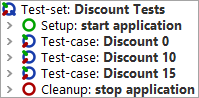 | ||
|
| Figure 29.1: First 'Test-set' of dependencies_work.qft | ||
Let us assume you just want to launch one specific 'Test-case', because that one failed or it verifies a specific defect. If you want to do so, you have either to run the whole 'Test-set', because you have to ensure that the prerequisites are fulfilled, or you run the 'Setup' manually and run the according 'Test-case' then.
As this is a situation which is very common but not easily solvable with the concepts we know already, QF-Test introduces the 'Dependencies' concept. It is responsible for managing prerequisites of 'Test-cases' and allows you to run one 'Test-case' directly. In that case QF-Test will take care of the prerequisites of the 'Test-case', e.g. launching the SUT, selecting a vehicle and so on.
A 'Dependency' can contain a 'Setup', a 'Cleanup', an 'Error handler' and a 'Catch' node. The 'Setup' of a 'Dependency' will be executed before each 'Test-case'. This is because the correct pre-conditions of a 'Test-case' are a very important aspect of a robust test-run. You could imagine a situation where one 'Test-case' closes the SUT because of a mistake. Then the next test-case has to launch the SUT again. Exactly for this situation, the 'Dependency' concept provides a very stable and fancy solution.
The second aspect of 'Dependencies' is that they optimize the execution of tests. With the current means we have to start the SUT before each 'Test-case' and stop the SUT after each. That is no problem for a small application like the JCarConfigurator, but for huge applications, like Eclipse/RCP application or any ERP system, this might become insufficient. That is why 'Dependencies' call the 'Cleanup' steps only if required.
Another advantage of the 'Dependencies' concept are global 'Error handler' and 'Catch' for recovery management. This feature becomes quite important, if you run lots of test-cases in a series and one is failing and preventing the other test-cases from continuing execution because of modal error dialogs, e.g. 'OutOfMemoryException'.
In a nutshell 'Dependencies' are
The following sections demonstrate how to use 'Dependencies'.
Please copy the test-suite
qftest-6.0.3/doc/tutorial/ advanced-demos/en/dependencies_work.qft
to a project-related folder first and open it there if you haven't done that so far.
This file contains a 'Test-set' 'Discount Tests' with three 'Test-cases' and the conventional implementation using the 'Setup' and 'Cleanup'. We will change this 'Test-set' to make use of a 'Dependency' now.
|
| |||
|
| Figure 29.2: First 'Test-set' of dependencies_work.qft | ||
First we have to insert a 'Dependency' node. This can be achieved by a right click at the 'Test-set' and then selecting »Insert node«-»Dependencies«-»Dependency«. Specify a name for that 'Dependency', e.g. "SUT started".
The next step is to move the 'Setup' and 'Cleanup' nodes into that 'Dependency'. Therefore open the 'Dependency' node and move the mentioned nodes into it. You can do this via drag and drop or via right mouse click »Cut« and »Paste« or [Ctrl-X] and [Ctrl-V].
The test-suite should now look like this:
|
| 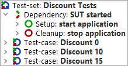 | ||
|
| Figure 29.3: Sample test-suite with the first 'Dependency' | ||
Let us test the 'Dependency' now: Please stop all running clients before that, then select one 'Test-case', e.g. 'Discount 10', and run it.
You should see that the 'Test-case' 'Discount 10' has been executed and the SUT has not been stopped at the end of the test-run. Please open the run-log to make a deeper analysis of what happened.
|
| 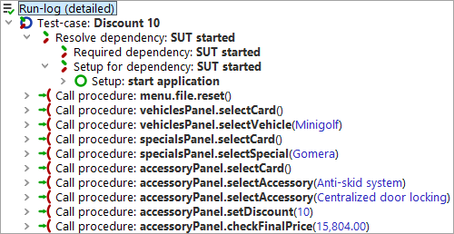 | ||
|
| Figure 29.4: The run-log of the execution | ||
If you open the 'Test-case' in the run-log, you can see a 'Resolve dependency' node. Open it and there you find two nodes. The last one shows that the 'Setup' has been executed. The other one will be explained in following chapters.
So far we have determined that the 'Setup' node will be automatically executed before a 'Test-case', if the 'Dependency' is defined at the 'Test-set' level, but the 'Cleanup' has not been executed so far. If you start another 'Test-case' now, e.g. 'Discount 15', the already started SUT is used.
The 'Setup' node of a 'Dependency' will be executed before each
'Test-case' in any case. That is to ensure that the prerequisites are fulfilled for each single 'Test-case'.
The 'Cleanup' node of a
'Dependency' will only be executed on demand, i.e. if the steps of the
'Setup' of that 'Dependency' are not required anymore. In our case the
'Cleanup' steps did not get executed, because both test-cases have the
same 'Dependency'. The test execution passed because the 'Procedure' startStop.startApplication
already checks whether it's necessary to launch the application or not.
|
| 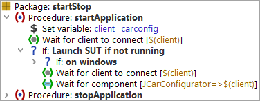 | ||
|
| Figure 29.5: 'Procedure' startStop.startApplication | ||
The next step is to launch the complete 'Test-set' by clicking it and pressing 'Run test'.
All three tests should pass and the SUT should not be stopped in between. We have achieved an optimized test-execution. The 'Cleanup' will not run because all three test-cases refer to the same 'Dependency'. We save a lot of time in executing the test-cases and we are closer to testing a real life behavior as users usually do not restart the SUT all the time.
The next goal is to make that 'Dependency' available for other 'Test-sets' in our project. For this you need to move the 'Dependency' node into the 'Procedures' area. Then click at the 'Test-set' and insert a 'Dependency reference' node via »Insert node«-»Dependencies«-»Dependency reference«. The dialog looks similar to the 'Procedure call' dialog and you can select the 'Dependency' on the same way. The test-suite should now look like this:
|
| 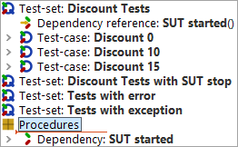 | ||
|
| Figure 29.6: The test-suite with a 'Dependency reference' | ||
We recommend to add all 'Dependencies' to a separate 'Package' called 'dependencies'.
If you run the 'Test-set' the first time after moving the 'Dependency', QF-Test stops the SUT before the first 'Test-case' and re-starts the SUT, because the 'Dependency' from the 'Test-set' is different from the 'Dependency' defined in the 'Procedures' node. But this will be explained more detailed in following chapters.
Please take a closer look at the second 'Test-set' 'Discount Tests with SUT stop' of the demo test-suite. The second 'Test-case' 'Dicount 10' stops the SUT. But the third 'Test-case' also relies on a running SUT. As we know the 'Dependencies' concept already, we should see that the SUT will be started for the third 'Test-case' again. That is exactly the advantage of the 'Dependencies' concept.
|
| 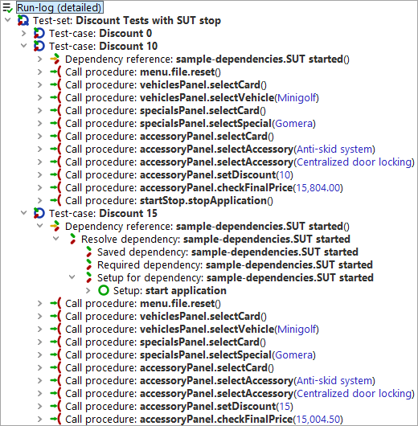 | ||
|
| Figure 29.7: Ensuring prerequisites for 'Test-case' 'Discount 15' | ||
Managing prerequisites can be a more complex matter than just verifying whether the SUT is up and running. In many projects several groups of test-cases with different prerequisites like others exist.
Let us assume you want to test a big ERP system with more views, like a 'vendor' view and an 'article' view. Then all tests for the 'vendor' view will rely on an opened 'vendor' view and all tests for the 'article' view rely on an opened 'article' view. The opening of the specific view again relies on a logged-in user and the login depends on a started SUT. So you can see something like a tree of prerequisites.
QF-Test allows the user to build such a structure of 'Dependency' nodes via adding 'Dependency reference' nodes to a 'Dependency'. We will build up a small example with just two dependencies for the JCarConfigurator now.
In the JCarConfigurator you can open a 'vehicles' dialog via the menu 'Options' -> 'Vehicles'. We want to create certain tests for that dialog now. Later we want to create some tests on the 'accessory' dialog which can also be opened via the menu via 'Options' -> 'Accessories'.
First let us define the tests which we want to create.
Test Case 1: Create vehicle 'test1' with price '100'.
Test Case 2: Create vehicle 'test2' with price '99999'.
Test Case 3: Create accessory 'testaccessory' with price '12'.
Let us take a closer look at the test-steps of the tests above. We see that each test case requires a running application, so we should implement the 'Start SUT' step as prerequisite. This has to be done in the 'Setup' of a 'Dependency'. The 'Stop SUT' step is an optional step which can be part of the 'Cleanup' of the 'Dependency'. This 'SUT started' 'Dependency' has been implemented by us in the previous examples already, so we could re-use it.
The next issue is that test-case 1 and test-case 2 require an opened vehicle dialog. Because we plan more tests in that area, we can create a new 'Dependency' 'vehicles dialog opened', which will contain the opening of the dialog as 'Setup' and the closing of the dialog via 'Cancel' as 'Cleanup'. We are able to open this dialog only if the SUT is up and running already, so this 'Dependency' is dependent on the 'SUT started' 'Dependency'. The implementation of that 'open vehicle dialog' 'Dependency' looks like this:
|
| 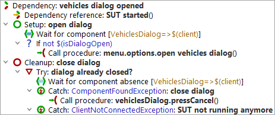 | ||
|
| Figure 29.8: 'vehicles dialog opened' 'Dependency' | ||
Note In the 'Setup' we have to check whether the dialog is already opened, because a previous test-case could have forgotten to close the dialog. The 'Timeout' attribute of the 'Wait for component to appear' node is set to '0' because the dialog is expected to be here. If the dialog is already opened, it is fine and we can continue, otherwise we have to open the dialog.
We have to create a 'Dependency' 'accessories dialog opened' as well. This 'Dependency' is similar to the 'vehicles dialog opened' 'Dependency', but it deals with the accessory dialog instead of the vehicles dialog.
After creating those dependencies we have to record the according
test-steps and create the test-cases. The test-steps have already been
implemented by us and you can find them in the according 'Package'
structure in the test-suite
qftest-6.0.3/doc/tutorial/ advanced-demos/en/dependencies.qft.
The test-cases should be organized in one 'Test-set' called 'Combined Dependencies Tests'. This 'Test-set' should contain two more 'Test-sets'. The first one is 'Tests for vehicles' and the second one is 'Tests for accessories'. The 'Test-set' 'Tests for vehicles' has to contain the implementation of test-case 1 and test-case 2 and a 'Dependency reference' to the 'vehicles dialog opened' 'Dependency'. The second 'Test-set' 'Tests for accessories' has to contain test-case 3 and a 'Dependency reference' to the 'Dependency' 'accessories dialog opened'.
|
| 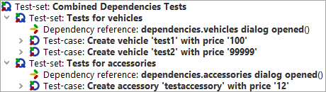 | ||
|
| Figure 29.9: Implementation of specified test-cases | ||
If you run that 'Test-set' now, you will see that QF-Test stops the SUT first, because that comes from a dependency of the previous examples. Then QF-Test starts the SUT, performs the steps of test-case 1 and then the steps of test-case 2. Then it will perform the steps of test-case 3. If you take a closer look at the beginning of test-case 3 in the run-log, you will see that the 'Cleanup' of the 'vehicles dialog opened' 'Dependency' has been executed. That happened because the 'vehicles dialog opened' 'Dependency' was not required anymore. The following test-case test-case 3 required the 'accessories dialog opened' 'Dependency'. However, both 'Dependencies' require the 'SUT started' 'Dependency', that is why that 'Cleanup' of the 'SUT started' 'Dependency' has not been executed.
|
| 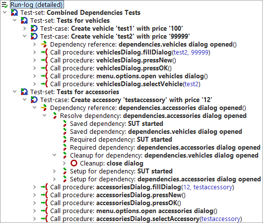 | ||
|
| Figure 29.10: Run-log of nested 'Dependencies' | ||
The ability to combine dependencies or to call the 'Cleanup' of dependencies on demand can enable you to put a lot of preparing and cleaning steps into a 'Dependency'. Another use-case for the JCarConfigurator could be to create a 'Vehicle created' 'Dependency', which creates a vehicle, which is required for the test and removes it afterwards. That would be an approach to ensure that the test-data has been established correctly.
Please copy the test-suite
qftest-6.0.3/doc/tutorial/ advanced-demos/en/dependencies_work.qft
to a project-related folder first and open it there if you haven't done that so far.
You can find a
'Test-set' 'Tests with error'. The second 'Test-case' of that 'Test-set'
fails.
|
| 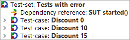 | ||
|
| Figure 29.11: Test-suite of 'Error handler' | ||
Let us assume that we want to trigger a specific behavior after a test-case, but only if it failed. In our case we could stop the SUT to guarantee that the following test-case can rely on a clean environment again. We know that the 'Setup' node is executed before each 'Test-case' and the 'Cleanup' node will only run on demand. So how could we run specific steps only in case of an error?
The solution is the so called 'Error handler' node for a 'Dependency'. You have to click at the closed 'Cleanup' node of that 'Dependency' and insert the 'Error handler' node via right mouse click and selecting »Insert node«-»Dependencies«-»Error handler«.
In the 'Error handler' you can define the steps for stopping the SUT
again. The 'Dependency' SUT started should look like this now:
|
|  |
||
|
| Figure 29.12: 'Dependency' with 'Error handler' | ||
Please run the whole 'Test-set' 'Tests with error' and switch into the run-log after the test-run has finished.
In the run-log you can see that the 'Error handler' was executed after the second 'Test-case' only.
|
| 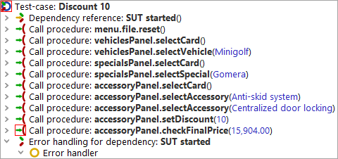 | ||
|
| Figure 29.13: Run-log for 'Dependency' with 'Error handler' | ||
In the previous section we have learned that 'Error handler' nodes contain steps which are executed if the 'Test-case' fails. Besides errors also exceptions can occur during a test-run. An exception is an unexpected behavior during the test-run, e.g. an error dialog appears suddenly or a component could not be found anymore. How should we handle such exceptions?
You can find an example 'Test-set' 'Tests with exception' in the test-suite dependencies_work.qft.
Of course you could surround the test-steps in each 'Test-case' by try-catch and implement a dedicated exception handling in each single 'Test-case', like implemented in the demo 'Test-set'. But this approach could lead to a lot of redundancy and makes the 'Test-cases' a little bit more unreadable.
|
| 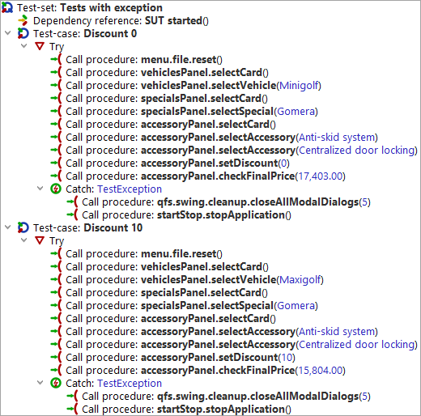 | ||
|
| Figure 29.14: Try-catch nodes in each 'Test-case' | ||
Our goal is to reduce the redundancy and to move the exception handling - which is always the same - to one global location. This location will be our 'Dependency'.
The first step is adding the 'Catch' node to the 'Dependency' via clicking at the closed 'Error handler' node and selecting »Insert node«-»Control structures«-»Catch« in the menu. Then we can copy the procedure-calls for stopping the SUT into that 'Catch'. Now the try-catch nodes in the single test-cases become unnecessary. Please move the procedure-calls out of the 'Try' and remove the empty try-catch structure.
Your test-suite should look like this now:
|
| 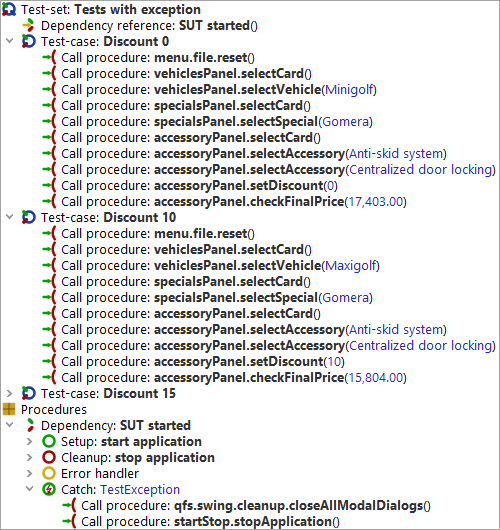 | ||
|
| Figure 29.15: Test-suite with 'Catch' | ||
Now you can start the 'Test-set' 'Test with exception'. The second 'Test-case' throws an IndexNotFoundException, because the selected vehicle does not exist. It is intended to handle that exception in the 'Catch' of the 'Dependency'.
Note If the debugger is activated, QF-Test interrupts the test-run at the place where the exception arises. In this case you might have to re-throw the exception via the 'Rethrow exception' button. An alternative is to deactivate the debugger via »Debugger«-»Enable debugger«.
After the test-run you can open the run-log and verify what happened.
|
| 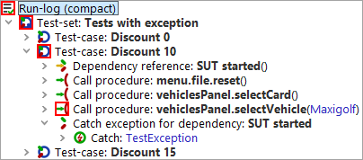 | ||
|
| Figure 29.16: Run-log of a 'Dependency' with 'Catch' | ||
In a normal project you should at least try to catch a
'TestException' and the 'Catch' should contain a procedure call
of either qfs.swing.cleanup.closeAllModalDialogs,
qfs.fx.cleanup.closeAllModalDialogs
or qfs.swt.cleanup.closeAllModalDialogsAndModalShells.
Those procedures close all modal dialogs, e.g. dialog windows,
which are blocking the execution.
You have seen that you can implement a very strong recovery system for your test-cases using the 'Error handler' and, even more important, the 'Catch' of 'Dependencies'.
In most projects the global 'Catch' node becomes very important, especially if ComponentNotFoundExceptions and ModalDialogExceptions appear.
In the previous sections we have learned that we can combine several dependencies and that the 'Cleanup' of a 'Dependency' is only executed, if the stack of combined dependencies changes. We could also instruct a 'Dependency' to call its 'Cleanup' every time after a 'Test-case'. This can be achieved by checking the attribute 'Forced cleanup' of the 'Dependency'.
There are even more interesting features about dependencies, e.g. you can use a variable instructing QF-Test to run the 'Cleanup'. This variable is called 'Characteristic variable'. You will find more details about that feature in the manual at chapter Dependencies. This approach could be used to create one 'user login' 'Dependency' which will only run through its 'Cleanup', i.e. perform the logout, if another user is required by the next 'Test-case'.
A detailed description of dependencies can be found in the manual at chapter Dependencies.
| Last update: 9/6/2022 Copyright © 2002-2022 Quality First Software GmbH |